getCredible raised $540k to disrupt talent discovery with a proprietary data layer
InReach Ventures, the 'AI-powered' European VC, closes new €53M fund
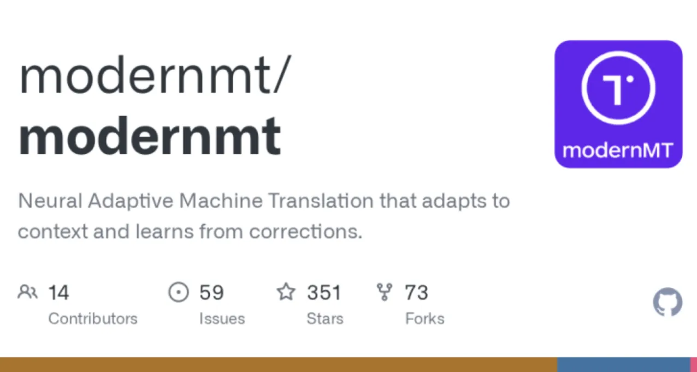
Led a contextualized machine translation research proposal that won $3.5M in EU Commission funding and now powers Airbnb content translation.
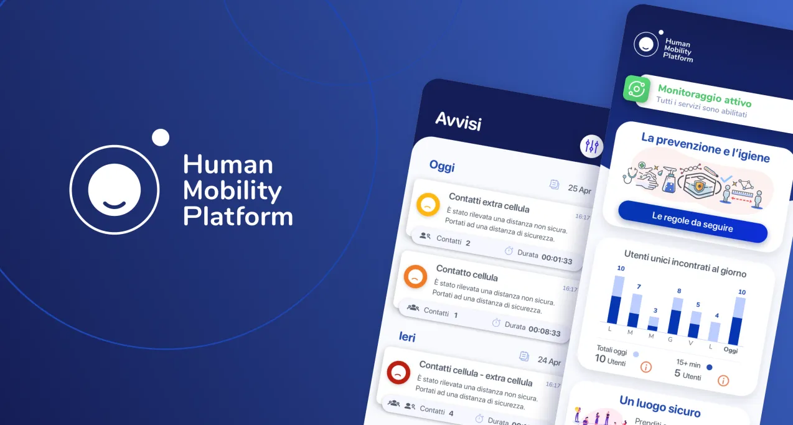
Launched B2E product in 3 months, $2.9M revenue in 12 months
CovidApp shortlisted by the Italian government as the second-best worldwide out of 350 entries
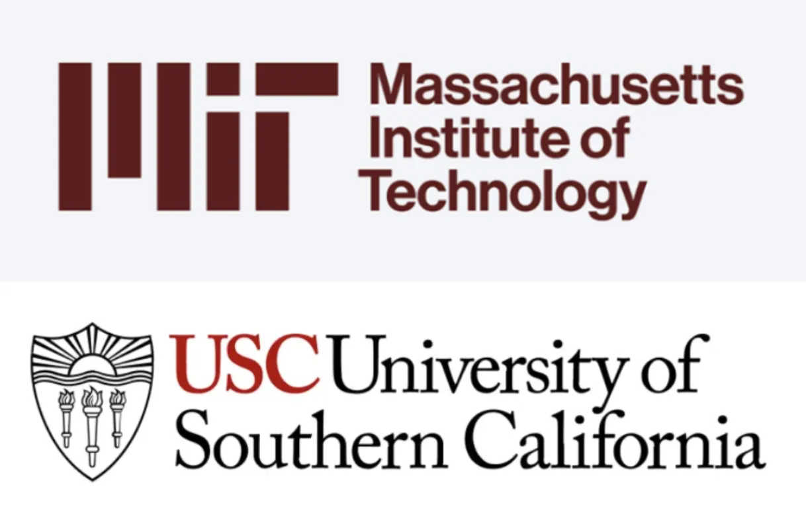
Improving graph-based distance inference under noisy signal constraints (published with MIT & USC)
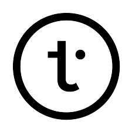
Joined Translated.com as the 3rd engineer and first Product Manager
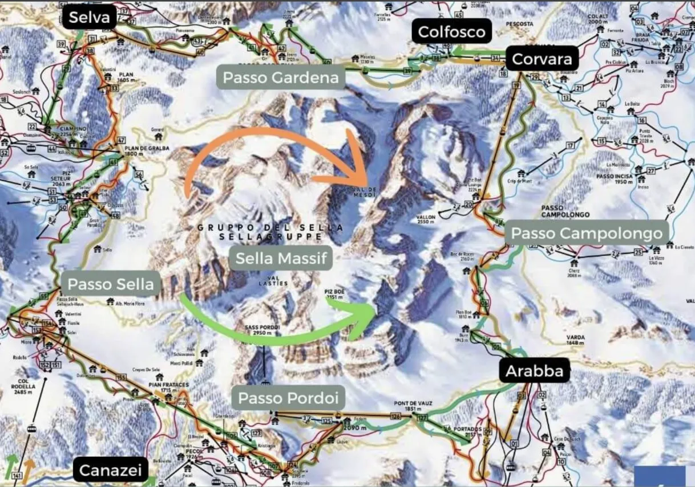
62 miles skied in a single day (Triple Sellaronda)
Serial tech founder and product-led engineer with 10+ years of experience building and scaling high-impact products from 0 to 1. Led teams of 20+ engineers and scaled a B2E platform from $0 to $3M ARR in under 12 months. Won a $3.5M EU grant for the top-ranked AI proposal, now powering Airbnb's global content. Combines deep ML expertise with strong product intuition, with a track record of leading high-performance teams in competitive environments.
At 35yo: Twice Top 30 Daily Trader on Polymarket
25x return over 800 trades in 48h.
A crypto predictive engine leveraging real-time cross-asset prediction divergence and historical Bayesian states to capture high-conviction trading opportunities.
At 32yo: $540K raised for getCredible
Founder & CEO, VC-backed startup: identify and hire 10x performers.
- Led a team of 8 in build a product to fuel a step-change in a traditional industry, rethinking first-principle how to collect a proprietary data layer to solve the biggest problem in industry: how to identify top talent.
getCredible helps companies automatically identify and hire top performers by combining peer referrals with AI.
Users play quick 1-vs-4 polls featuring AI-selected talent from their contact list (similar to Nikita Bier's Gas app) to vote for the top performers they know, and reserve a 2% success fee with a single click on the selected talent. Our AI aggregates and analyzes these peer insights into verified performance leaderboards by role, industry, and seniority.
Companies hire directly from these performance leaderboards with a single click, paying a 10-30% success fee (no upfront costs), or purchase performance scores of their applicants ($1K-$5K per job position) to optimize their hiring channels.
getCredible Pitch:
Product Screens:
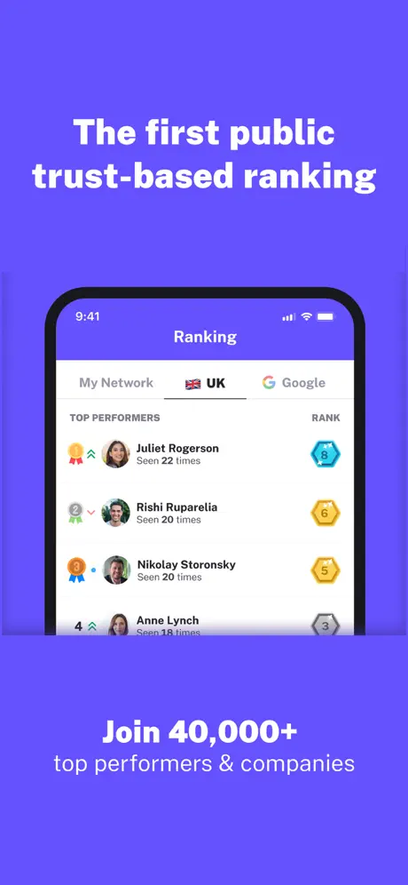
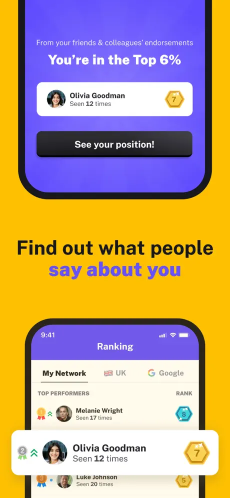
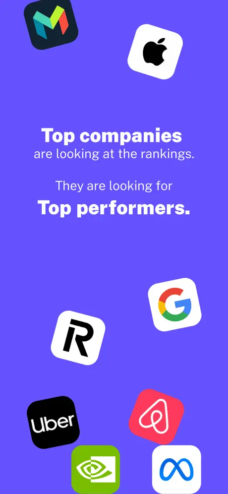
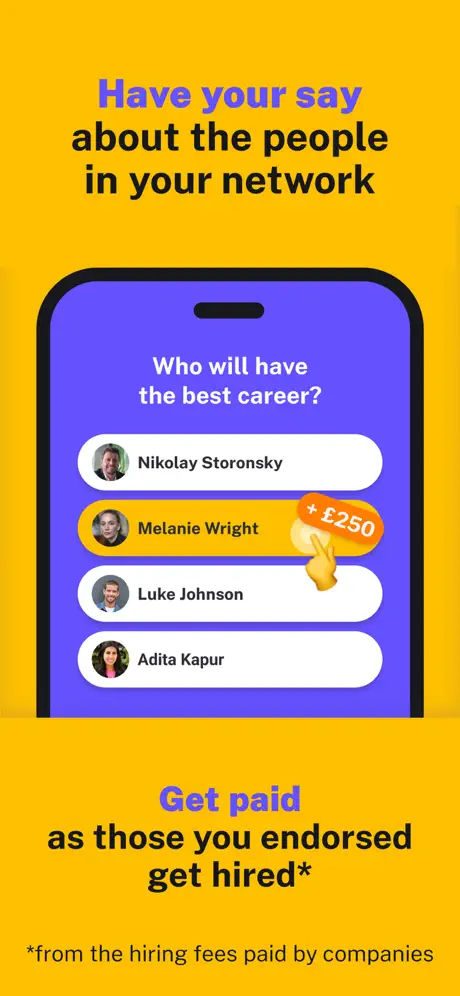
At 30yo: $2.9M ARR in <12 months
Led a team of 20+ to scale Human Mobility to 100k users across 9 countries (Founder and CTO).
- As Founder and CTO, I led a cross-functional team of ~20 to build and scale a complete B2E ecosystem (mobile app, back-office, support) from scratch in less than 3 months. We secured a $1.2M contract shortly after launch.
- I managed strategic relationships and decision-making directly with C-Level executives of the publicly listed partner company (Be Group - Ticker: BEST.MI).
- Our hardware solution was trust-tested for high-stakes contact tracing, notably during the Cortina 2021 World Ski Championships (the official Olympic test event) and the Serie A soccer match during the pandemic (Udinese-Fiorentina).
Human Mobility Press Release (Partnership with Be):
At 29yo: World's 1st graph-based Contact Tracing app
Built and led a team of 35 researchers. Shortlisted by Govt; published research with MIT & USC. (Founder and CEO)
In just 3 months, I built and led a remote cross-functional team of 35 world-class researchers and engineers from major centers including IBM, Massachusetts Institute of Technology, University of Southern California, USFC, CNR, etc..
We developed the world's first graph-based contact tracing algorithm and mobile
application, which was officially shortlisted by the Italian Government
as
the primary backup to the Apple/Google system, out of 350 worldwide
entries, after passing rigorous
national
security
and technical pressure tests.
View Official Report →
My work on the foundational graph principles was co-authored and published with researchers from MIT and USC in ScienceDirect: Defining Graph-based Contact Tracing.
At 27yo: Built AI platform for a $60M VC fund
Lead ML Engineer @ InReach Ventures; 70% partner-AI agreement in startup pre-qualification.
InReach Ventures
2 yrs 5 mos
London, United Kingdom
Lead Machine Learning Engineer
Jan 2019 - Jun 2020 · 1 yr 6 mos
Senior ML Engineer
Feb 2018 - Dec 2019 · 1 yr 11 mos
I led the development of the intelligent core of InReach, the
AI-powered investment firm focused on early-stage European startups. The automatic
pre-qualification system reached 70% agreement with the partner's pre-qualification
decision, based on ~100 features extracted for each company, allowing the firm to scale
operations without compromising quality.
Noticeable investments: Soldo, Shapr3D, Dreamdata, Kayzen, Craft, Eneba, Oberlo
(exit), Sealk (exit), Qriously (exit), Returnly (exit)
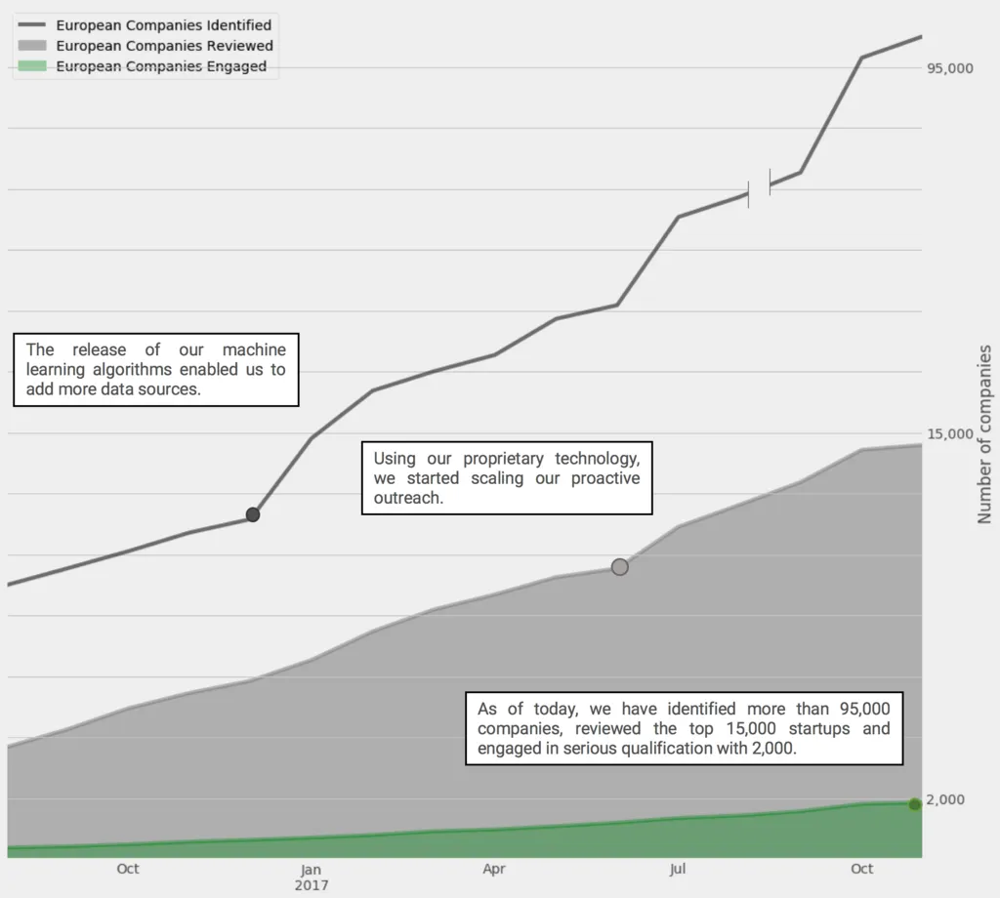
2017: 🇬🇧 Moved to London, UK
2012-2015: 🎓 MSc CS @ Sapienza (GPA: 29/30 - Dropout)
At 25yo: Sold automatic lead-gen platform to Translated.com
Scaled their outreach channel from $200k/y to $2M/y.
Built and sold an automated lead generation pipeline for translation requests by scraping
forums, detecting relevant opportunities, and engaging users with context-aware quotes.
Designed a dashboard to optimize performance and run A/B tests.
Sold after 2 months to Translated, grew their cold outreach channel from €200K/year to
€2M/year.
At 23yo: Won $3.5M EU grant for AI Translation
Led 10 researchers; tech now used to translate all Airbnb content.
At 22yo: 3rd engineer @ Translated.com
Early team member of a future quasi-tech-unicorn.
Translated
5 yrs 1 mo
Rome Area, Italy
Joined as the 3rd engineer to build the foundational infrastructure of a startup that would later reach nearly-unicorn status as a global leader in AI translation.
ML Software Engineer and Product Owner
Dec 2014 - Jan 2018 · 3 yrs 2 mos
Led the development of MyMemory, Translated's flagship TM search engine. Today it's the industry's most used TM server, serving 300M+ queries per month across 8B segments.
PMO & Researcher
Mar 2014 - May 2016 · 2 yrs 3 mos
Wrote and won a €3M European Commission grant as the best
proposal to develop new ML algorithms for contextualised translation. This
project later enabled Translated to secure the industry's largest contract:
translating all Airbnb content.
→ GitHub: modernmt/modernmt
351 Stars
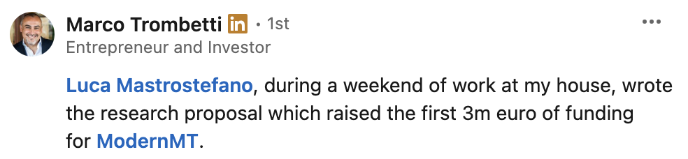
ML Software Engineer
Jan 2013 - Nov 2014 · 1 yr 11 mos
Improved MyMemory's data quality and scalability through advanced IR techniques, and developed automation tools to streamline translation-project workflows.
2009-2012: 📜 BSc CS @ Roma Tre (110/110)
At 21yo: Search engine for 4PB of data @ Memopal
Built high-performance indexing for an early Dropbox competitor.
Memopal
9 mos
Rome Area, Italy
Search Engineer
May 2012 - Jan 2013 · 9 mos
Implemented high-performance indexing and retrieval systems for massive storage architectures, enabling fast search across billions of files.
At 15yo: Built and sold AI bots for Travian.com
Automated referral bonuses with AI bot.
- Completely reproduced the entire game logic (building, resources, building constraints, etc.) on my laptop to simulate optimal strategies.
- Found the shortest path to complete mandatory Quests to unlock referral bonuses automatically.
- Still remember the terrible 2k lines of VB6 code that automatically played the game to generate referral bonuses!
At 15yo: Created "Escape from the City" car game
A 2D game that gained popularity among high-school peers.
- Built this game as a personal competition against my older brother to see who could create the better experience.
- Developed my very first AI (named Josha, in honor of the movie WarGames). It was a simple subtraction to make the police car chase the player's position, but it felt too cool at the time.
- I still remember friends playing so much that they eventually beat my own high score; I still smile thinking about that feeling.
Coder since 12: Losing sleep to build products from an early age
Obsessed with understanding problems, coding solutions, and building products.
I spent countless hours coding, recreating entire games like Pac-Man, Risk, and Backgammon without even knowing that arrays existed. Every object was numbered and manually updated one by one: a true obsession was born.
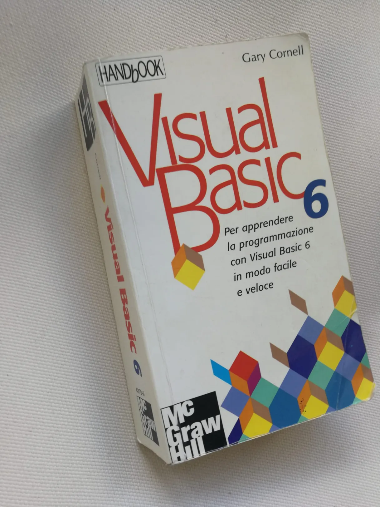
Education
2012-2014: 🎓 Master of Science, Computer Science @ Sapienza University of Rome (GPA 29/30) [Dropout]
2009-2012: 📜 Bachelor of Computer Science @ Roma Tre University of Rome (GPA 110/110)
getCredible: Top 0.1% performer out of 30k+ people
Verified top-tier talent on the getCredible platform.
At 35yo: Twice Top 30 Daily Trader on Polymarket
25x return over 800 trades in 48h.
At 30yo: $0-2.9M in 12 months as Founder & CTO
B2E product in 3 months, $2.9M revenue in 12 months
At 29yo: World's 1st graph-based Contact Tracing app
Shortlisted by Italian Govt; published research with MIT & University of Southern California (Founder & CEO).
At 23yo: Won $3.5M EU grant for AI Translation
Authored the highest-ranked proposal for Contextualized MT.
At 19yo: National Level Competitive Bridge
Represented Italy at U26 European Universities Championship.
Sport: Half-marathon in 1h 45m
My brother said I couldn't, guess who's wrong :)
Sport: Skied 62 miles in a single day
Triple Sellaronda (8.7 miles vertical gain) in the Dolomites.
At 28 yo: Angel Investor @ Devo
Marketplace/SaaS company
At 28yo: ML-powered Stock Trading Engine
Real-time technical analysis and signal detection.
A low-latency stock trading engine combining automated TA indicators with a custom ML model to detect high-conviction signals in real-time markets.
At 25: Angel Investor @ Spotonway
Marketplace/SaaS company
At 24yo: Presented Hashing Techniques
Deep dive into memory-efficient big data algorithms.
Presented a probabilistic approach to searching and filtering large datasets using innovative algorithms like hash indexing and Bloom filters. Techniques such as the Flajolet-Martin algorithm and local sensitive hashing provide memory-efficient solutions for counting unique items and finding similar files. The document emphasizes the trade-offs between accuracy, speed, and memory usage when handling big data in real-time environments.
Scroll or use the toolbar below to navigate the presentation:
At 23: 2D Engine for ML Experiments
Specialized environment for cars learning to drive via AI.
Efficient Engine + Framework
A specialized environment built to run ML algorithms in a 2D world with high efficiency.
Cars learning to drive
Project technical presentation:


At 23yo: Custom LZW Compression from scratch
High-efficiency bit-level compressor with shared dictionary.
Implemented a customized LZW compressor from first principles, optimizing for bit-level efficiency and dictionary sharing to maximize compression ratios on structured data.